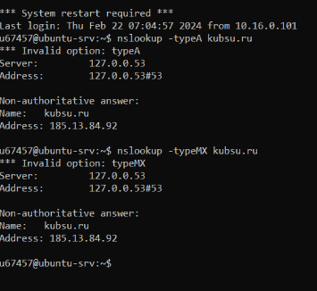

ip адрес с помощью ping

A-запись и MX-запись домена kubsu-dev.ru

А-запись и МХ-запись домена kubsu.ru

Дата регистрации домена kubsu.ru и kubsu-dev.ru

Клонирование репозитория с github на kubsu-dev.ru

С помощью программы FileZilla SFTP соединиться с учебным сервером с вашим логином и паролем по протоколу SFTP и скопировать на
локальный компьютер файлы задания из каталога www.